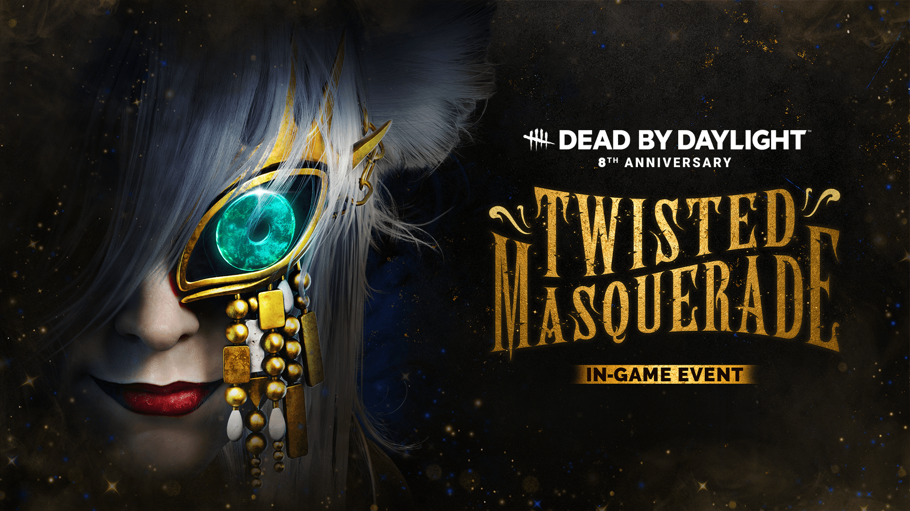
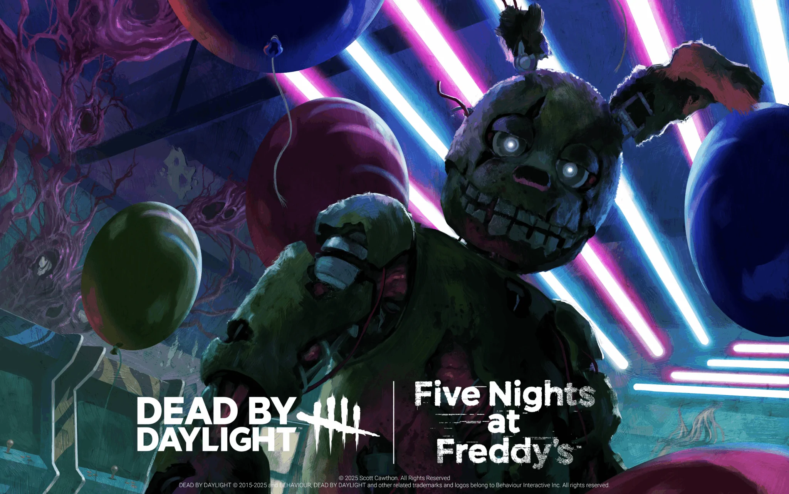
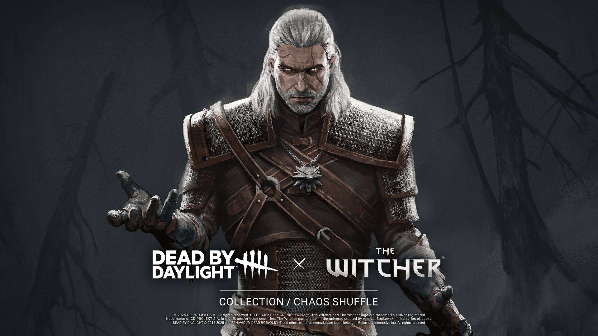
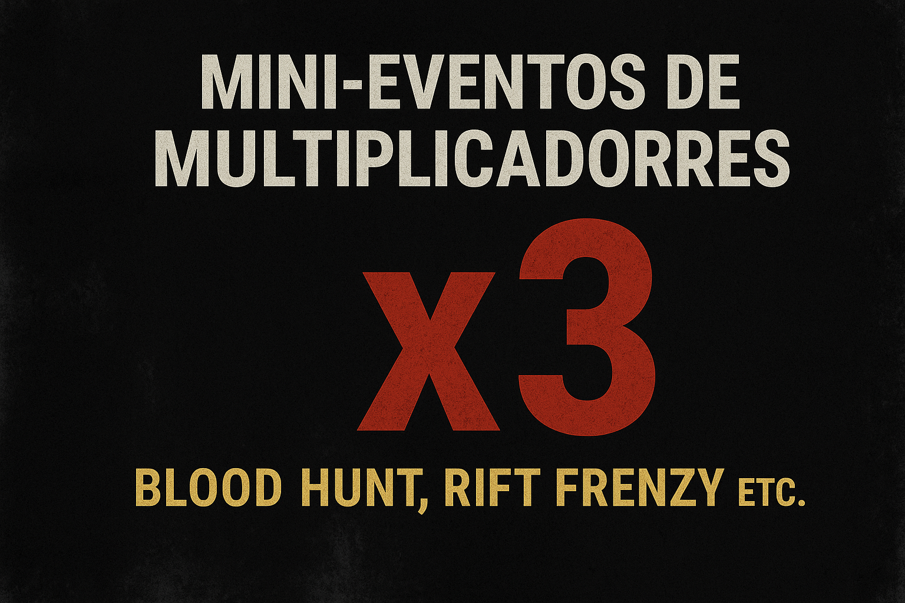

Twisted Masquerade (Aniversário 2025)

O Twisted Masquerade é o evento anual de aniversário de Dead by Daylight, sempre celebrado em junho. Em 2025, o evento trouxe uma atmosfera de baile de máscaras sinistro, com itens e visuais inspirados em festas aristocráticas distorcidas.
Características principais:
Convites de Máscara espalhados pelo mapa, que sobreviventes e assassinos devem coletar durante as partidas.
Tomo do Evento: um caminho de desafios e recompensas cosméticas, incluindo skins exclusivas para David King, The Wraith, e outros.
Lobby e HUD temáticos com visual dourado e musicalidade dramática.
Itens temáticos (lanternas, kits médicos, ferramentas) com skins de festa macabra.
O evento promove uma experiência única, misturando competitividade com festividade, sendo altamente aguardado pela comunidade todos os anos.
Blood Moon Event

O Blood Moon Event (Evento da Lua Sangrenta) traz uma ambientação mística e simbólica ligada à lua cheia e seus efeitos sobre os personagens. Ele surgiu como uma extensão temática para conteúdos de killers com forte apelo sobrenatural ou animalesco.
Características principais:
Desafios Especiais no Tomo do Evento com recompensas como visuais banhados em sangue.
Visual macabro de mapa e lobby, com tons de vermelho profundo e lua cheia ao fundo.
Skins exclusivas para killers como The Trapper e sobreviventes como Vittorio Toscano.
Itens encantados como lanternas e ferramentas com efeitos especiais.
O evento mistura mecânica tradicional com conteúdo estético imersivo, trazendo uma experiência sombria, visualmente marcante.
Crossover: Five Nights at Freddy’s (Capítulo: Dread & Dismay)

Esse foi um dos crossovers mais aguardados da história do jogo. Introduzido em junho de 2025, trouxe o icônico Springtrap como assassino jogável, intitulado The Animatronic.
Características principais:
Novo assassino – Springtrap: usa um poder chamado “Surveillance Override”, que permite interceptar interações e emboscar sobreviventes de forma imprevisível.
Mapa inspirado em Freddy Fazbear's Pizza: contém salas monitoradas por câmeras, portas de segurança e corredores estreitos.
Elementos sonoros únicos, como ruídos eletrônicos e jumpscares em determinadas ações.
Skins especiais e charms colecionáveis inspirados nos animatrônicos da série.
Esse capítulo uniu o terror psicológico de DBD com o horror animatrônico de FNAF, criando uma combinação aterradora.
Crossover: Five Nights at Freddy’s (Capítulo: Dread & Dismay)

Apesar de não trazer um capítulo jogável, a coleção The Witcher adicionou ao jogo uma série de cosméticos visuais baseados em personagens da famosa franquia RPG da CD Projekt Red.
Conteúdo incluso:
Skins para sobreviventes baseadas em:
Geralt de Rívia (para Vittorio Toscano)
Ciri (para Haddie Kaur)
Yennefer (para Elodie Rakoto)
Triss Merigold (para Kate Denson)
Skin lendária "Leshen" para The Artist (inspirada na criatura da floresta que aparece em The Witcher 3).
Charms mágicos como o medalhão da Escola do Lobo.
Voz original de Geralt, dublada por Doug Cockle, para alguns gestos e falas especiais.
Esse conteúdo aproxima o universo do RPG clássico com o terror de DBD de forma respeitosa e detalhada.
Mini-eventos de Multiplicadores (Blood Hunt, Rift Frenzy etc.)

Estes são eventos regulares e rápidos promovidos pela Behaviour, com foco em recompensar a atividade dos jogadores ao longo de alguns dias ou um fim de semana.
Tipos comuns:
Blood Hunt – Pontos de Sangue dobrados.
Fragment Frenzy – Ganha-se mais fragmentos do Rift.
XP Boost – Aumenta a progressão de personagens e Tomo.
Essence Rush – Aumenta a essência de eventos temporários.
Esses eventos geralmente não alteram o gameplay, mas incentivam os jogadores a participarem mais intensamente durante o período, sendo ideais para subir de nível ou desbloquear novos perks e cosméticos.
Iniciativa de Qualidade de Vida – Fase 1 (junho/julho de 2025)

Apesar de não ser um evento "divertido", essa iniciativa trouxe mudanças significativas ao funcionamento geral do jogo, focando no bem-estar dos jogadores.
Melhorias implementadas:
Ajustes no sistema de crows (corvos de AFK): agora mais precisos, sem ativar injustamente.
Correções de bugs críticos, incluindo teleportes, perks quebrados e exploits.
Estabilidade de matchmaking e tempo de espera: melhorias na formação de lobbies.
Balanceamentos de perks e killers menores com base em feedback da comunidade.
Essas ações mostram o esforço contínuo da Behaviour em manter o jogo justo, estável e acessível para novatos e veteranos.